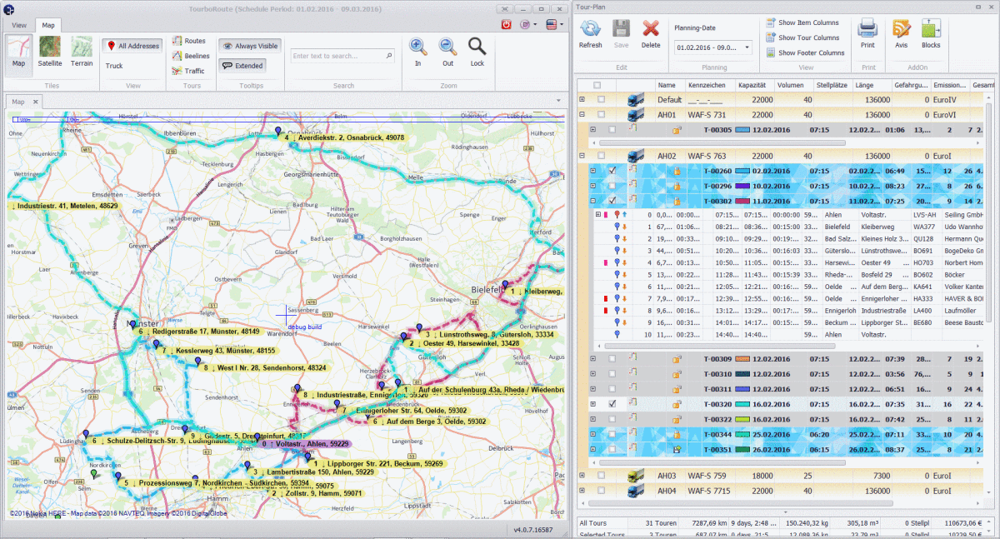

Josep Mir Izard
As a freelance software developer, I've helped many companies make their ideas come true.
Having started coding with QBasic when I was a child, I have never stopped since then. Transitioning from MS-DOS to Windows to the Web with some other incursions along the way: Mobile Phones (Nokia, Android, both in Java), embedded arduino firmware, 3D modelling using Unity, and even algoTrading. As you may probably know, the tech world is not short of keywords, buzzwords, and acronyms. Not gonna list them all... I have learned to talk to customers in a plain way.
After the GFC I moved to Germany, were I spent 5 years working for german Customers. Currently residing in Barcelona again.
Other interests I have are music, drone flying, and DIY in general.
Tourbo.Route (2015)
While in TourboSoft GmbH, I collaborated with 3 other developers on developing Tourbo.Route. I took a main role developing the map module, our DevExpress Grid, and many other things.
TourboRoute imports your delivery orders and assists in planning the deliveries. According to the cost and availability of vehicles, schedules, road distances…

CloudDesk (2013)
For Prevolution GmbH in Hamburg. CloudDesk was a web-based Ticketing System. It started in Slovakia and was then continued in the Hamburg’s HQ.
It made use of some of the latest technologies in HTML5 as well as DevExpress controls. The backend was an SQL Server which was accessed by a Data Layer Engine written in VB.
We integrated the backend with our Cherwell Software Solution through scheduled SQL Stored-Procedures.
Some new features were added:
- Search Recommendations while typing
- Rating widgets (Facebook-style Like, “Arrow Voting”, Stars)
- User Avatars
- Hierarchical Categories in the Shop
- Dynamically generated Html forms (textbox, checkbox, select) using an XML file. SQL Schema updated on-the-fly.
- Timeline (joining the previously Single Entries)

Master’s Project
The final project for the Master Degree in Computer Science at Universitat Autonoma de Barcelona was quite hardware-oriented.
Abstract: This project is about the construction feasibility of a system for the follow-up of a marmot’s population weight in high mountain. We build a weighing scale with a force sensor and a
temperature sensor. These analog outputs connect to an ATmega8 microcontroller that, with an algorithm developed in this project, is in continuous listening to detect sudden changes in
the weight. When this happens, the data is recorded in a SRAM memory for, later, being able to download this data to a computer for it to be analyzed by a program that has been created
for such purpose.
Download as PDF
Trivicat (2008)
Around 2008 I wrote Trivicat, a Java2ME game for Handys. It consisted of 200 questions about different subjects, which were later extended to 900 thanks to user collaboration. It received some press coverage from Catalan media .
Billiard Game (2006)
We developed a 3D Game for a University course in Computer Graphics. Working in a team of 5, and using C++ with OpenGL, we learned the fundamentals behind game design.
- Design of Objects with Blender
- Loading of Objects in .3ds Format along with textures
- Ball physics (crash, deceleration)
- Illumination
- Viewport transformation through the mouse
- Game workflow
- Audio Library
{kind=link}
{kind=link}
{kind=link}
{kind=link}
{kind=link}
{kind=link}
{kind=link}
{kind=link}
{kind=link}
{kind=link}
{kind=link}
{kind=link}
{kind=link}